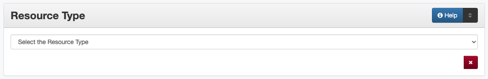

Resource Type
Definition
The type or category of the primary content of the resource
Where Can the Resource Type Information be Found?
Resource type is determined by examining the physical item
How Resource Type Works in the Metadata Form
- Parts:
Resource Type – drop-down menu
- Repeatable?
No
- Required?
Yes - also see (more information) about required fields
How Should the Resource Type be Filled in?
Guideline |
Examples |
|---|---|
Select the correct resource type from the controlled vocabulary |
image_score - Musical Score/Notation |
Use the most specific resource type that is relevant |
image_photo - Photograph (not “image”)
text_letter - Letter (not “text”)
|
If the particular kind of resource is not on the list, use a generic type |
image - Image
text - Text
|
If it is difficult to determine the resource type:
Check the glossary (in the Comments section) for clarification.
Note that the type may reflect the content rather than the format if they are different, for example:
Page images of textual items should be entered as “Text” not “Image”
A series of negatives/photographs should be entered as “Photograph”
“Papers” are documents about special topics similar to reports, not items made of paper
Born-digital types may not “match” the file format, e.g., not all content saved as a .xml is a “Dataset”
A page with both text and images should be entered based on which portion is most dominant or important, i.e.,
Does it seem like ‘text’ with accompanying images(s) – e.g., photos or illustrations in a letter or printed page?
Does it seem like ‘photograph(s)’ or illustrations with inscriptions and accompanying text?
Consider whether someone would expect to find the item if they limit their search to one particular type
Other Examples
- Proceedings of a convention (booklet)
Resource Type: text_book - Book
- Handwritten tally of voters from 1836
Resource Type: text - Text
- Advertisement (with illustrations)
Resource Type: image_artwork - Artwork
- U.S. Geological Survey Map
Resource Type: image_map - Map
- Tintype
Resource Type: image_photo - Photograph
- Opera score
Resource Type: image_score - Musical Score/Notation
- Organizational chart
Resource Type: image - Image
- Event flyer
Resource Type: text_pamphlet - Pamphlet
Resources
UNT Resource Type Controlled Vocabulary
More Guidelines:
Comments
Glossary of Resource Types
Primarily Text-Based Materials
Resource Type
Code
Use for:
Article
text_article
A full article from a periodical, such as a journal, magazine, or newsletter
Book
text_book
A book, atlas, photojournal, ledger, etc.
Book Chapter
text_chapter
A full chapter that is part of an anthology or larger, multi-chapter text
Clipping
text_clipping
Newspaper clippings and partial excerpts from other published materials
Thesis or Dissertation
text_etd
Thesis or dissertation
Journal / Magazine / Newsletter
text_journal
An issue of a periodical such as a journal, magazine, newsletter, bulletin, etc.
Legal Document
text_legal
Court or government legal documents, e.g., affidavits, deeds, wills, land grants, warrants, etc.
Legislative Document
text_leg
Materials generated by state and federal legislatures, such as text of bills and resolutions, or session proceedings
Letter
text_letter
Correspondence
Newspaper
text_newspaper
Full issue of a newspaper
Pamphlet
text_pamphlet
A non-serial publication under 50 pages including booklets, brochures, flyers, etc.
Paper
text_paper
Written composition such as an essay, working/discussion paper, white paper, etc.
Patent
text_patent
A government-issued patent including a description and often diagram(s)
Poem
text_poem
A poem or text written in verse
Prose Fiction
text_prose
A literary composition not classified as poetry, such as a novel, novella, or short story
Report
text_report
A research, statistical, technical, or summary report written by an individual, organization, or other agency
Review
text_review
A written commentary on an item (books, artwork, journals, etc.) or an event (performances, conferences, exhibitions, etc.)
Script
text_script
Text of plays, speeches, etc., meant to be read or performed
Yearbook
text_yearbook
Serial yearbook or annual documenting members of a class or organization
Text
text
A certificate, handwritten note, or other text item not specified above (e.g., printed forms, business cards, invoices, tickets, receipts, ballots, unbound meeting minutes/agendas, etc.)
Primarily Image-Based Materials
Resource Type
Code
Use for:
Artwork
image_artwork
Two-dimensional images such as a painting, drawing, engraving, graphic design, plan, etc.
Map
image_map
An individual map or unbound map sheet
Musical Score/Notation
image_score
Sheet music or score
Photograph
image_photo
Photographic print, negative, or slide
Postcard
image_postcard
Postcard (with or without written notes)
Poster
image_poster
Broadside or poster
Presentation
image_presentation
Images or text used as visual aids for a speech, lecture, seminar/webinar, or other presentation
Technical Drawing
image_drawing
Architectural or engineering illustrations
Image
image
Other type of still image not specified above (e.g., logos, charts graphs, etc.)
Other Materials
Resource Type
Code
Use for:
Collection
collection
Group or compilation of items
Dataset
dataset
Statistical data files, CD-ROMs of data, databases, etc.
Interactive Resource
interactive-resource
Video game, interactive virtual exhibits, etc.
Physical Object
physical-object
Museum piece (such as furniture, dishes, tools), architectural structure, monument, three-dimensional object (including sculptures, etc.
Sound
sound
Audio recording
Software
software
Application software such as presentation viewers, word processors, etc.
Specimen
specimen
Scientific sample
Video
video
Analog or digital animation, moving image, television program, etc.
Website
website
Webpages